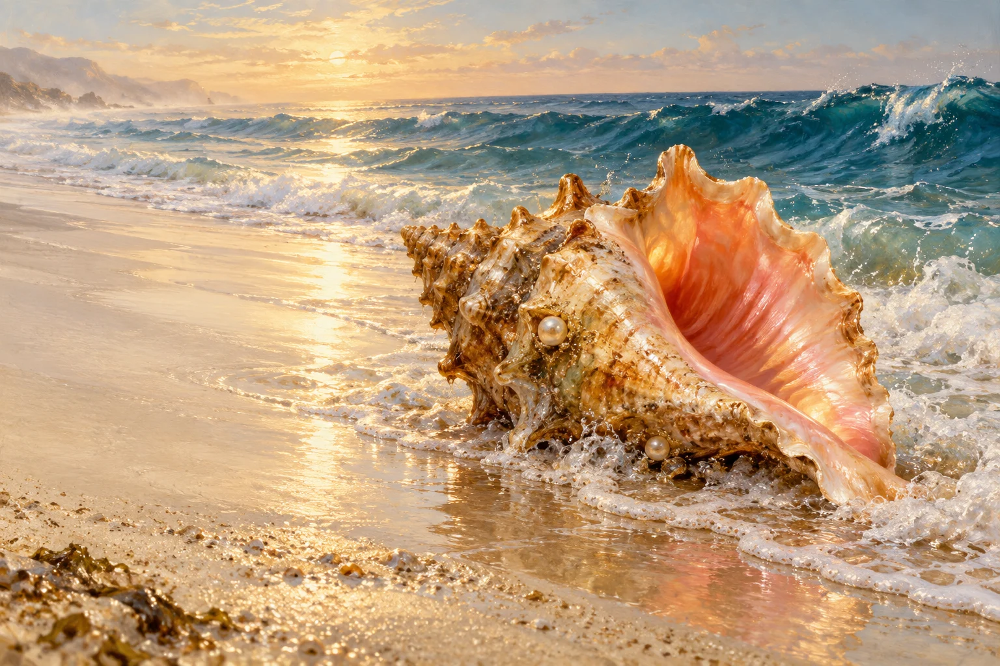
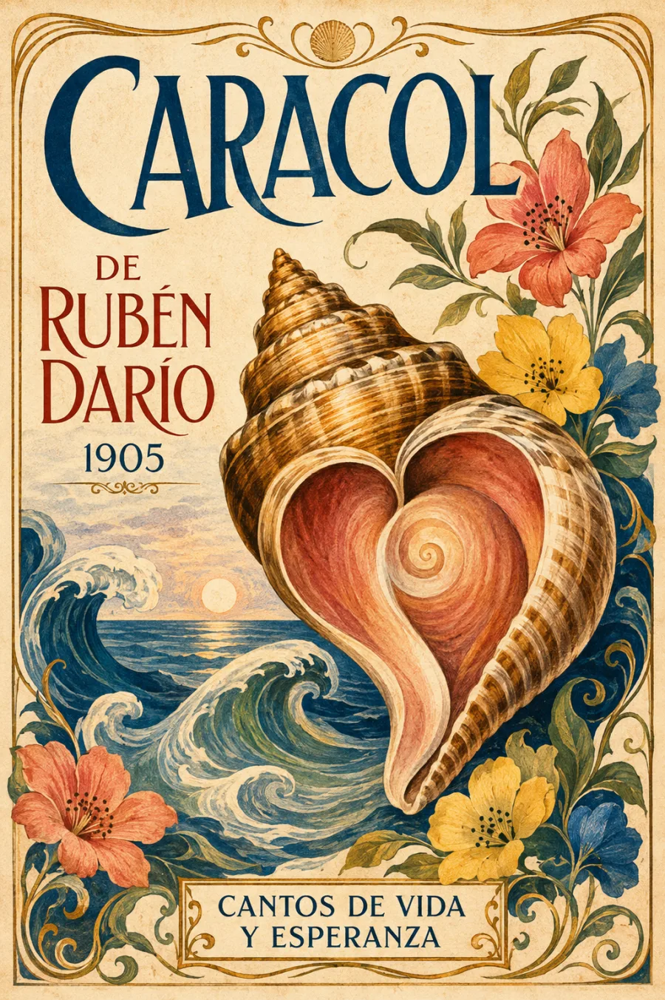

Audiolibros · Cuarta Ola
Caracol
Rubén Darío · Cantos de vida y esperanza · 1905
El mar cabe en un corazón.
Oro y perlas sobre la arena.
Un rumor que despierta los mitos.
Escuchar el mar es acercarse a uno mismo.

La memoria sonora del mar.
Volumen

Del hallazgo a la escucha
El soneto comienza con un objeto encontrado en la playa: un caracol de oro y perlas. La mirada cede pronto a otros sentidos. El hablante lo lleva a los labios, luego al oído; la caracola deja de ser una joya inmóvil y se vuelve instrumento, resonancia y promesa de un secreto.
La forma del corazón llega al final: transforma todo lo que acabamos de escuchar.
Europa, el toro celeste, la nave Argos y Jasón abren una memoria mitológica dentro del rumor marino. Darío reúne el lujo material, la música y la imaginación sin reducirlos a un simple adorno. El paréntesis final acerca ese mundo remoto al cuerpo: la inmensidad del mar encuentra una figura íntima.
Incluido en Cantos de vida y esperanza (1905), en «Otros poemas», XXIX, y dedicado a Antonio Machado. Texto y edición · Biblioteca Virtual Miguel de Cervantes. La imagen superior interpreta las materias y metáforas del soneto; no representa una pieza arqueológica ni un objeto perteneciente al poeta.
La lectura
Poema completo
Una lectura continua del soneto. Claves de escucha: el paso de la mirada al oído, los nombres míticos y la intimidad del último verso. Grabación pendiente de incorporación.
Reseñas

Bueno